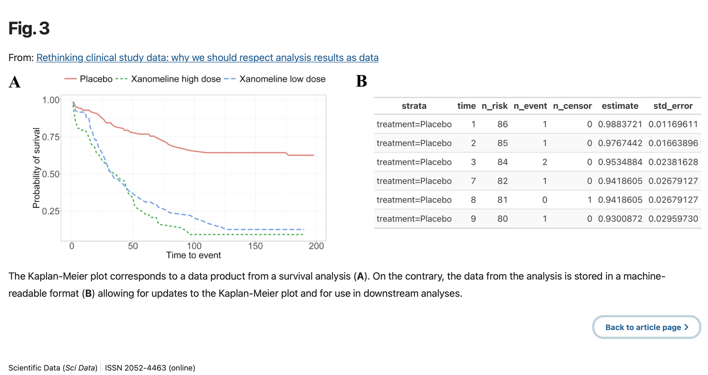
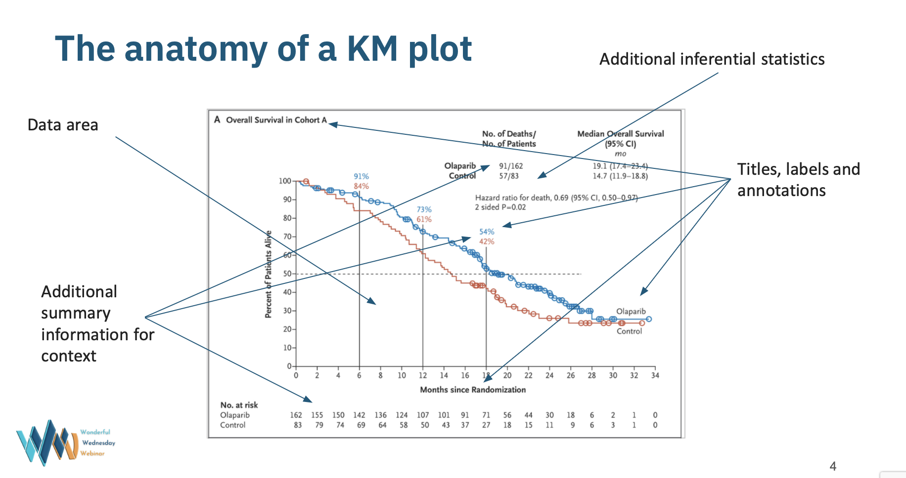

Rough notes on analysis plans for exploratory investigations
Guidance on conducting initial data analysis in a reproducible manner in the context of intended regression analyses.
Unfiltered and to be processed notes supporting the writing of the 21st century DMC paper
Presenting to efspi/PSDM Meeting on Data Visualisation
Ten simple rules to help provide a better foundation for data analysis.

Rethinking what the data analysis target is.

Presentation at PSI 2022 conference.
Can developing critical thinking, broader than statistics issues, help improve data analysis practice, especially in the exploratory setting?
Simple and practical solutions to tone down your next graph.